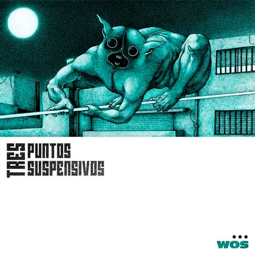
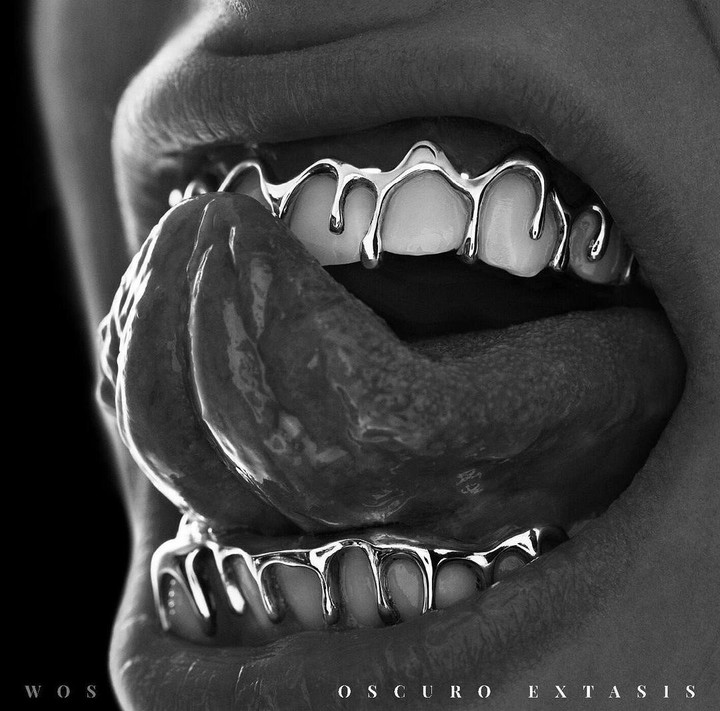

WOS MUSIC

ALBUMES PRINCIPALES
Caravana (2019)
Su album debut con temas iconicos como Canguro, Luz Delito y Melon Vino.

Tres Puntos Punto (2020)
EP lanzado durante la cuarentena con una propuesta intima y experimental.

Oscuro Extasis (2021)
Obra consagratoria con colaboraciones potentes y sonido rock-rap expansivo.
Descartable (2024)
Su proyecto mas maduro y crudo, fusionando energia alternativa y letras profundas.